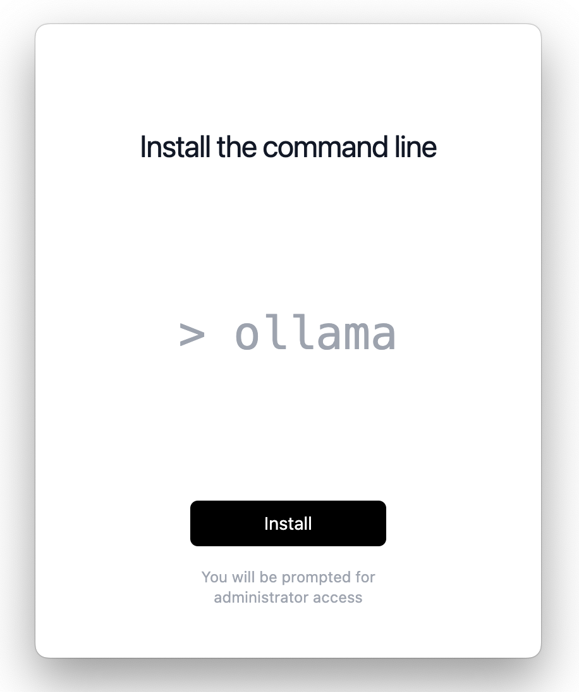
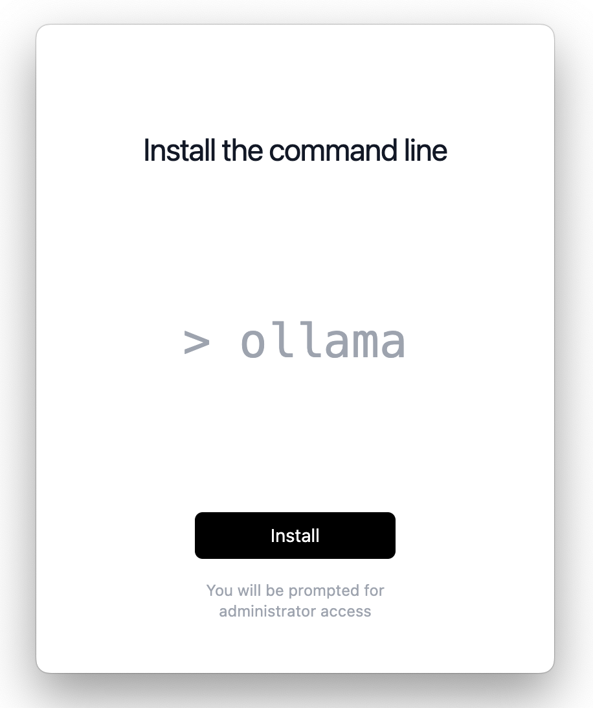

How to Install and Use Ollama#
Prerequisites
This guide does not assume any prior knowledge about WayFlow.
Ollama is a lightweight framework for running Large Language Models (LLMs) on a local machine. Ollama does not require an internet connection to run the models, which makes it a great solution to quickly prototype WayFlow assistants without relying on external LLM providers.
This how-to guide demonstrates how to install and use Ollama to build AI-powered assistants with WayFlow.
Installing Ollama#
This section shows how to install Ollama on macOS.
Step 1: Go to the Ollama website and click on Download.

Step 2: Navigate to your Downloads folder and extract the ollama` archive. On macOS, double-click the _.zip_ file to unzip it.

Step3: Double-click the Ollama application to launch it. When prompted, click Move to Applications to relocate it to your Applications folder. Then, follow the on-screen instructions to complete the installation.

You may be prompted to enter your password to complete the installation.
 

{kind=link}

Testing Ollama in the terminal#
To try Ollama in the terminal, open a terminal window and run ollama run llama3.2 to use the latest model.

To exit the conversation, simply enter /bye.
To display the list of running models, use the command ollama ps.
Warning
Exiting the terminal is not sufficient to stop the model. To stop the model, use the command ollama stop <model_name>.
Using Ollama in WayFlow#
To use Ollama within WayFlow, set the model type to ollama` and specify the desired model ID (for example, llama3.2).
Important: Before using a model in WayFlow, ensure it is downloaded and running. Execute ollama run <model_name> in your terminal to start the model.
For a comprehensive list of available models, visit the Ollama Library.
Note
Ollama is designed to run lightweight models, which typically include smaller models (e.g., Llama3.2 with 1B or 3B parameters) or heavily quantized models (e.g., Llama3.1 with 4-bit quantization). As a consequence, their performance may not match the performance of the original models.
from wayflowcore.agent import Agent
from wayflowcore.models import OllamaModel
llm = OllamaModel(
model_id="llama3.2:1b", # Update this with the model you will use.
)
llm = LlmModelFactory.from_config(OLLAMA_CONFIG)
assistant = Agent(llm=llm)
conversation = assistant.start_conversation()
conversation.append_user_message("I need help regarding my sql query")
conversation.execute()
# get the assistant's response to your query
assistant_answer = conversation.get_last_message().content
# I'd be happy to help with your SQL query...
print(assistant_answer)
Note
By default Ollama binds port 11434. You can specify a custom host port by specifying the "host_port" key in the model configuration. For example:
llm = OllamaModel(
model_id="llama3.2:1b", # Update this with the model you will use.
host_port: "localhost:11435",
)
After using an Ollama-hosted model, it is advisable to stop the model to free up system resources.
To do this, first list all currently running model names by executing ollama ps, and then run ollama stop <model_name> to stop the desired model.
Next steps#
In this guide, you have learned how to install and use Ollama to start building assistants with WayFlow.
To learn more, check out tutorials on how Build a Simple Conversational Assistant with Agents as well as how to Build a Simple Fixed-Flow Assistant with Flows.